- ホストマシンのストレージは64GB以上空けておく必要がある。
- インストール直後であっても、20GBほどストレージを消費する。
1. VirtualBox側の設定
VirtualBox上でWindows 11を正常に動かすための仮想マシンの新規作成、およびインストールの事前準備となるリソース割当とハードウェア設定を行います。
- VirtualBoxを起動し、上部メニューの「新規」をクリック
- 仮想マシンの名前と OS:
- VM名: 任意（例:
Win11_24H2） - ISOイメージ: 事前にダウンロードしたWindows 11のisoファイルを選択
- 無人インストールを実行: チェックを外す
- VM名: 任意（例:
- 仮想ハードウェアを指定:
- メインメモリー: 8192MB 推奨
- CPU数: 8コア 推奨
- 設定内容を確認し、「完了」
作成した仮想マシンの設定を最適化し、ローカルアカウント作成をスムーズに行うためにネットワークを遮断します。
- 作成した仮想マシンを選択した状態で「設定」を開く
- ディスプレイ ＞ 「グラフィックスコントローラー」を
VBoxVGA に変更
TIPVBoxSVGAを利用すると起動できない事象を確認したため、VBoxVGAを選択する
- ストレージ ＞
VM名.vdiを選択 ＞ 「SSD（ソリッドステートドライブ）」にチェックを入れる - ネットワーク ＞ 「ネットワークアダプターを有効化」のチェックを外す
- 「OK」をクリックして変更を保存
2. Windows 11 インストール
仮想マシンを起動し、Windows 11のインストーラーの指示に従ってエディションやキーボード環境を選択していきます。
仮想マシンを起動後、画面に
Press any key to boot from CD or DVD......
と表示されたら、
すかさず任意のキー（Spaceキーなど）を叩く
デフォルト（日本語）のままであることを確認し、そのまま「次へ」
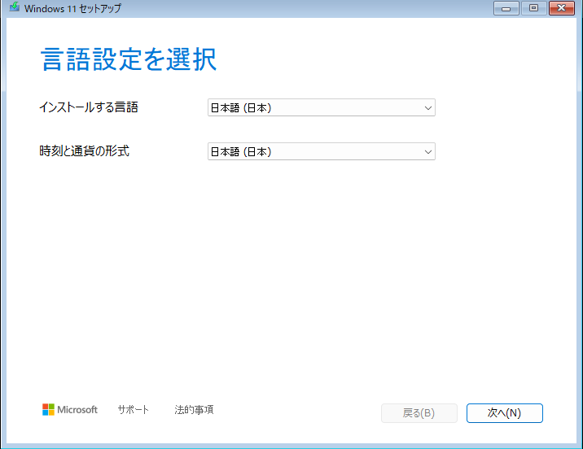
キーボードの種類を「日本語キーボード（106/109キー）」に変更後、「次へ」
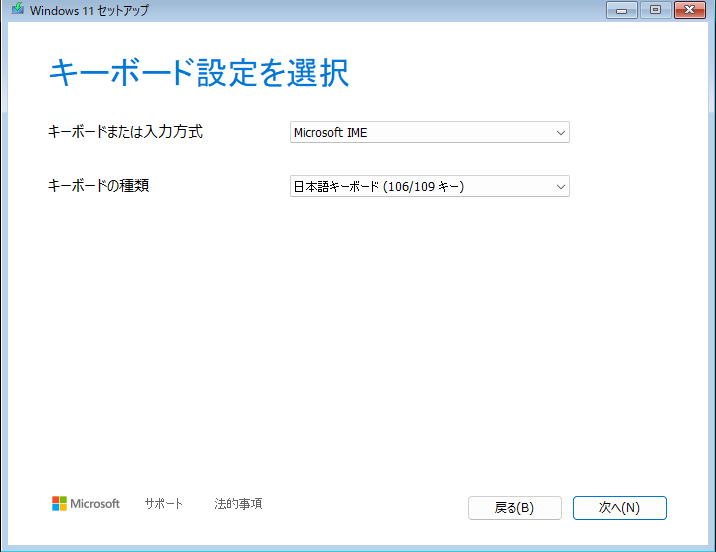
I agree everything ... にチェックを入れ、「次へ」
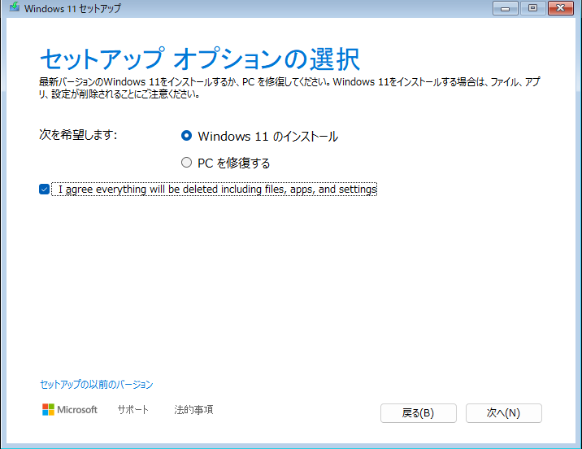
左下の「プロダクトキーがありません」を押下
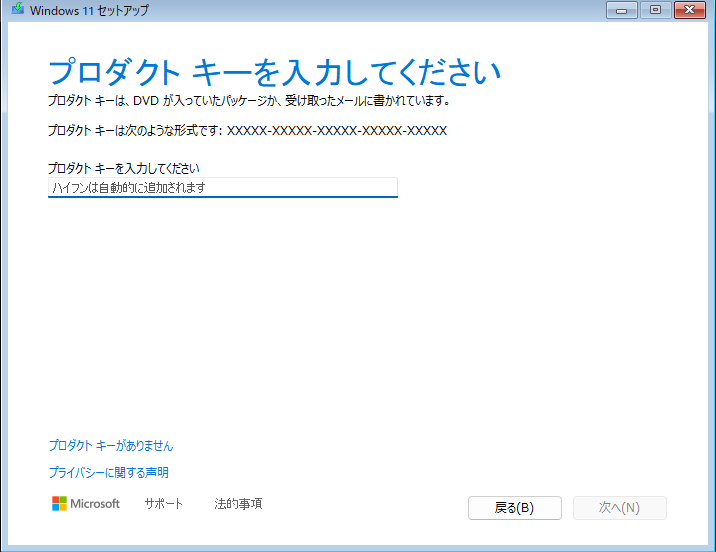
Windows11 Pro を選択して「次へ」
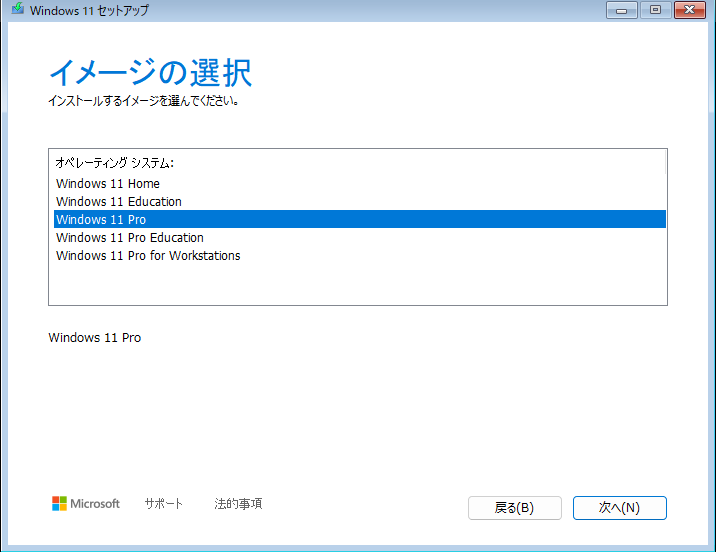
「同意する」を押下
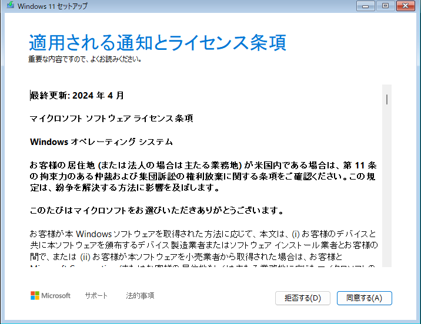
容量が80GBのパーティションを選択して「次へ」
※すこしだけ時間がかかる
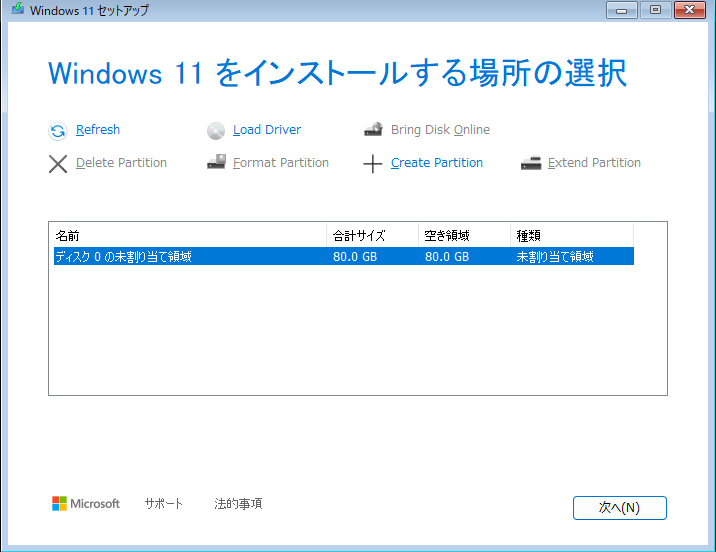
インストール準備完了
※インストールは結構時間がかかるため、気長に待つ
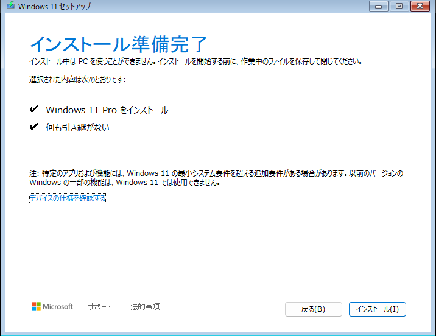
もし固まったら強制的にシャットダウンして起動しなおす
3. OOBEネットワーク制限の回避
Windows 11のセットアップでは、ネットワーク接続とMicrosoftアカウントの紐付けをスキップできない。 ローカルアカウントでセットアップを完了させるために、制限を回避するコマンドを投入する。
初期インストール完了後、国・地域選択などの「OOBE画面」が起動したら以下の作業を実施する。
最初の選択画面（国選択等）が表示された状態で、キーボードの Shift + F10 キーでコマンドプロンプトを立ち上げる
-r: 再起動
-t 0: 0秒後に実行
-f: 強制実行
※もしシャットダウン状態のままフリーズした場合は、強制的に電源を落として再起動する
4. ローカルアカウントセットアップ
制限回避設定（BypassNRO）を適用して再起動したため、ネットワーク未接続のままでセットアップを進めることができる。
日本が選択された状態で「はい」
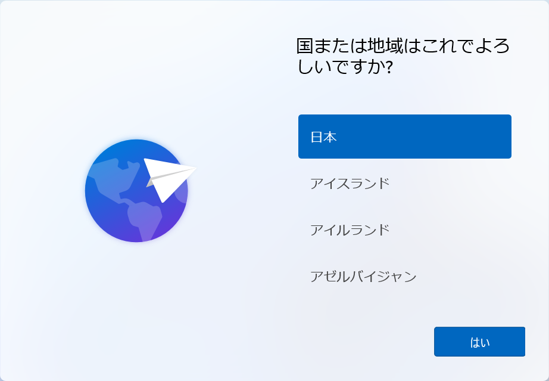
Microsoft IME が選択された状態で「はい」
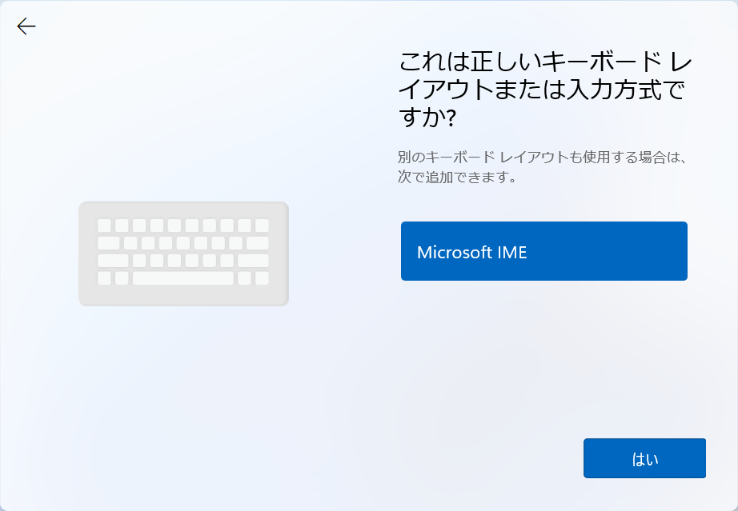
「スキップ」
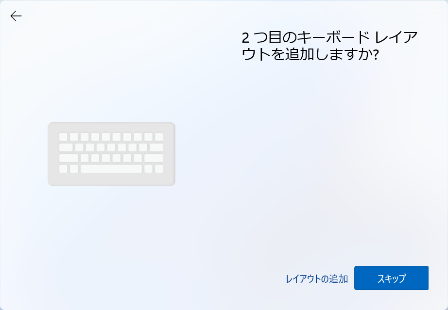
「インターネットに接続していません」を押下
※本来表示されないが、さっきのコマンドで表示されるようになった
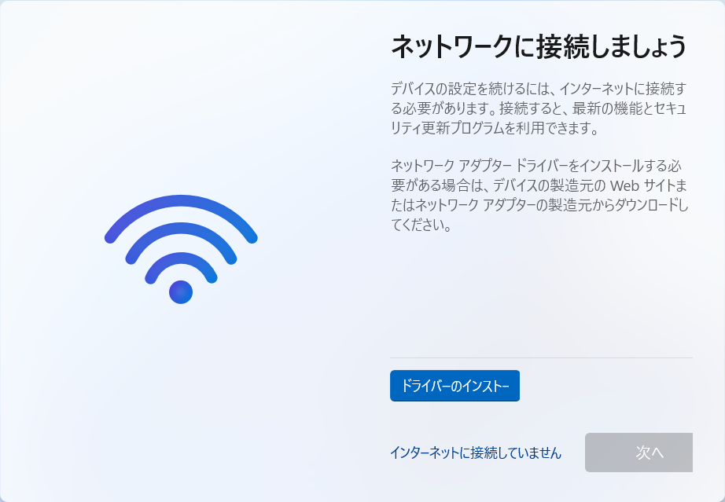
任意の名前を入力して「次へ」
※あとから変更できないため注意
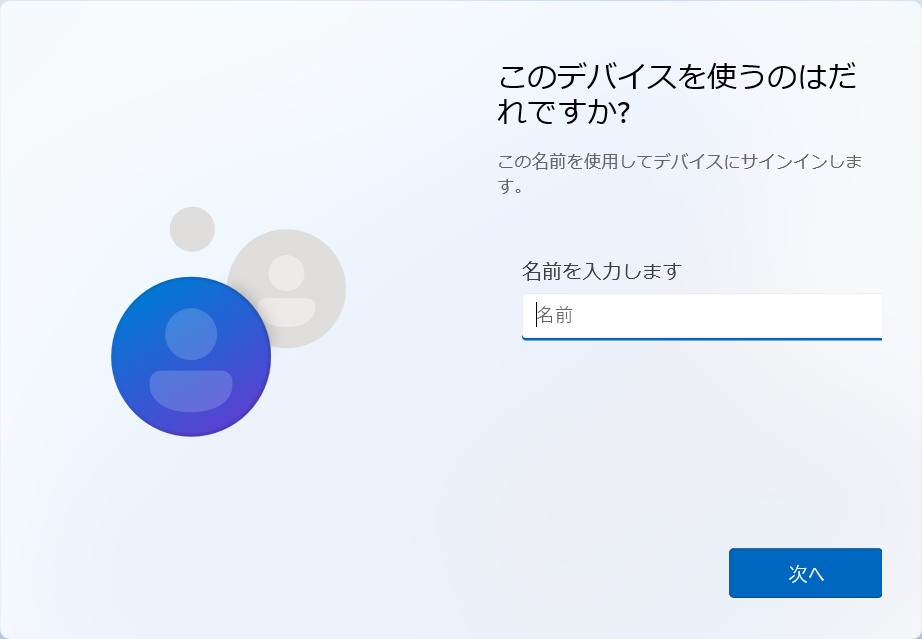
任意のパスワードを設定して「次へ」
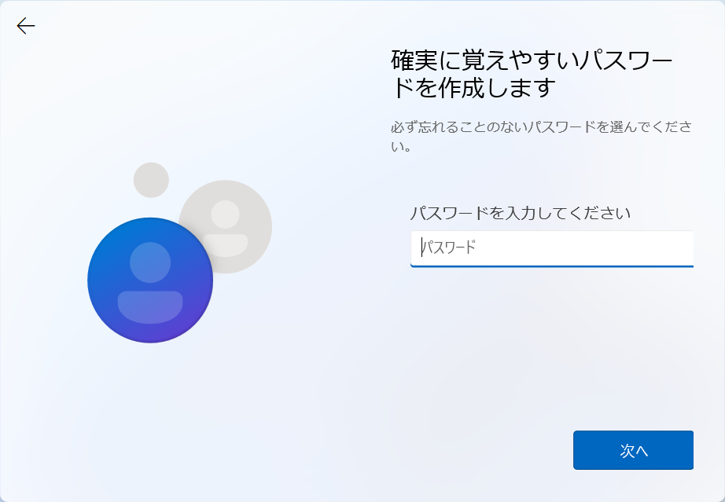
同様のパスワードをもう一度入力して「次へ」
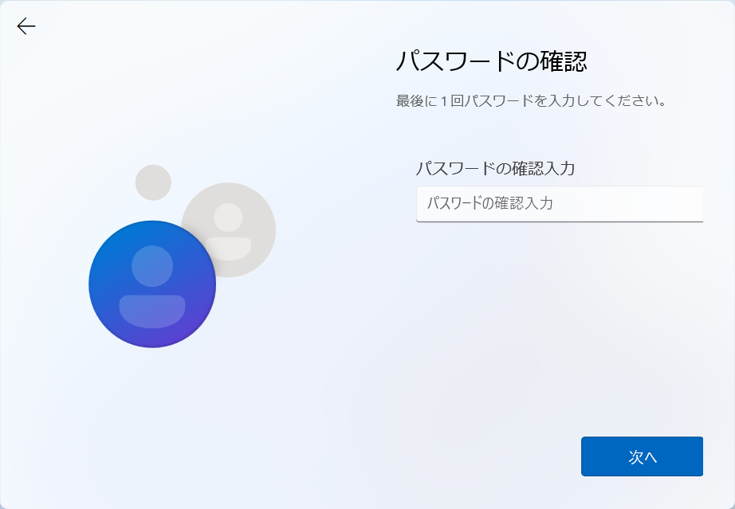
3つ設定する必要があるため、質問を選んで回答を入力
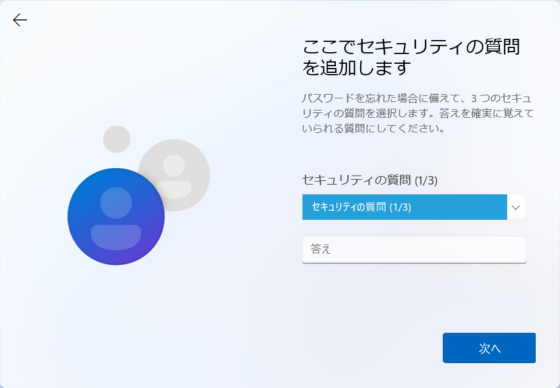
Microsoft が勧めてくるオプションはロクなことがないため、全部いいえにして「次へ」
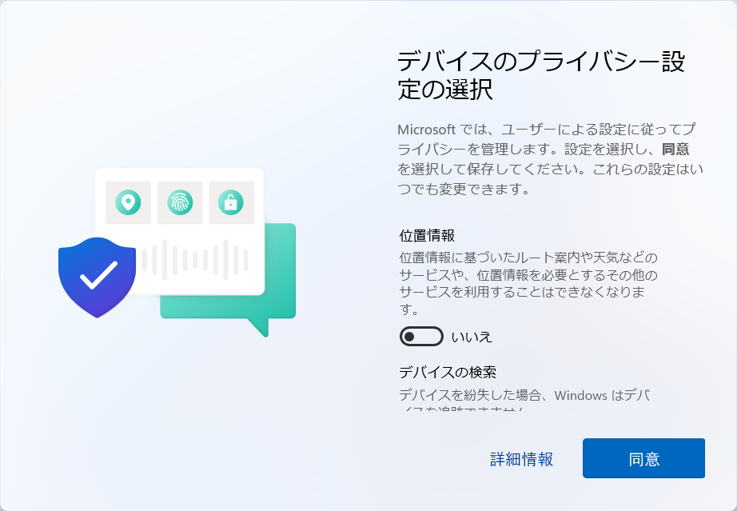
こんにちは。
準備しています。
これには数分かかる場合があります。
PCをコンセントに接続して電源を入れたままにしておいてください。
もう少しで完了です。
5. インストール完了後の設定
デスクトップ画面が表示された後、Windowsを使用可能な状態にする。
- スタートメニュー等から「設定」を開く
- Windows Update タブ ＞ 更新の一時停止 ＞ 「1週間一時停止する」 に変更します。
- VirtualBox側のNWアダプター有効化:
- VMのWindowsをシャットダウン
- 当該マシンの 設定 ＞ ネットワーク ＞ 「ネットワークアダプターを有効化」のチェックをつける
- 通信回復の確認:
- 再度仮想マシンを起動させ、Windowsがインターネットへ疎通していることを確認
最後に、Windowsをシャットダウンしてスナップショットを取る。